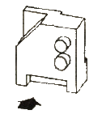
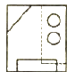
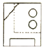
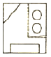
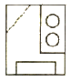

시각디자인산업기사 (2009-03-01 기출문제)
1과목: 색채학
1. 다음 색채에 대한 설명 중 틀린 것은?
- 채도가 높으면 자극이 강하다.
- 색조는 명도와 채도를 합친 개념이다.
- 일반적 배색 원칙으로 색조가 강한 색은 좁은 면적에 액센트색으로 사용한다.
- 무채색의 속성에는 색상이 없고 명도와 채도만 있다.
(정답률: 알수없음)

2. 다음 중 혼색계의 대표적인 것은?
- 먼섹 체계
- NCS 체계
- CIE 체계
- DIN 체계
(정답률: 알수없음)
3. 다음 색 중 명도가 가장 낮은 색은?
- 2R 8/4
- 5Y 6/6
- 7.5G 4/2
- 10B 2/2
(정답률: 알수없음)
4. 서로 다른 두 색상의 색료를 혼합했을 때, 그 혼합색이 중립의 Gray나나 Black에 가까운 색이 되었을 경우 두 색의 관계는?
- 보색
- 단색
- 순색
- 인근색
(정답률: 알수없음)
5. 파란색 물감에 흰색 물감을 섞었을 때 나타나는 변화는?
- 부의 잔상은 명암에 대하여 일어난다.
- 정의 잔생이 일어나려면 오랜 시간(30~40초)의 자극이 필요하다.
- 정의 잔상은 밝기나 색상이 원자극과 비슷하다.
- 부의 잔상은 명순응시(light adaptation)와 관계가 있다.
(정답률: 64%)
6. 미술관이나 박물관내 전시물 진열대의 색채계획에서 가장 중점적으로 고려할 사항은?
- 진열물의 배경을 변화 있게 한다.
- 진열물의 배경이 반사되게 한다.
- 진열물과 배경이 대비되게 한다.
- 진열물과 배경이 유사 조화를 이루게 한다.
(정답률: 알수없음)
7. 다음 색맹(色盲)에 관한 설명 중 옳은 것은?
- 전색맹(全色盲)은 추상체의 기능은 있고 한상체의 기능은 없다.
- 망막의 염증이나 이탈은 선천적 색맹과 연관이 있다.
- 전색맹(全色盲)은 명암의 판단만 가능하다.
- 색각이상(色覺異常)은 색맹과는 상관없다.
(정답률: 알수없음)
8. 백색광원으로부터 빛이 Yellow필터를 투과한 후 다시 Magenta 필터를 투과했을 때 최종적으로 보여질 광선의 색은?
- White
- Yellow
- Green
- Red
(정답률: 알수없음)
9. 문·스펜서의 색채조화론에 대한 설명 중 잘못된 것은?
- 감성적으로 다루어졌던 조화론을 정량적으로 다룬 과학적 조화론이다.
- 각자의 경험이나 주관을 통합한 색채조화론이다.
- 미적계수를 산출해낼 수 있도록 시도하였다.
- 먼셀표색계를 활용하여 연구한 조화론이다.
(정답률: 알수없음)
10. 다음 중 유사색 조화에 해당되는 것은?
- 5Y, 10YR
- 5P, 10BG
- 10BG, 10RP
- 5P, 10GY
(정답률: 알수없음)
11. 유채색의 명도 및 채도에 관한 수식어 중 가장 채도가 높은 것은?
- Vivid
- Light
- Deep
- Pale
(정답률: 알수없음)
12. 다음 중 식당의 실내배색에 있어서 식욕을 돋구는 색으로 가장 좋은 색은?
- RP 바탕에 Y 배색
- YR 바탕에 R 배색
- G 바탕에 B 배색
- P 바탕에 Y 배색
(정답률: 알수없음)
13. 아파트 계단실의 색채 조절에 관한 설명 중 가장 올바른 것은?
- 벽면은 반으로 나눙 아래쪽은 명도 4 정도로 처리한다.
- 현관문은 벽과 보색을 이루며 명도 차이도 크게 한다.
- 햇볕이 잘 안 들기 때문에 한색 계열로 처리한다.
- 공간이 좁기 때문에 가급적 밝게 한다.
(정답률: 알수없음)
14. 표지판의 색을 황색 바탕에 검정으로 하는 가장 주된 이유는?
- 황색이 경고색이므로
- 규범에 의해서
- 명시성과 가독성을 높이기 위해서
- 색상대비의 효과를 위해서
(정답률: 알수없음)
15. 다음 중 파장이 가장 짧은 색은?
- 청색
- 청록색
- 황록색
- 적색
(정답률: 알수없음)
16. 주위색의 영행으로 인접색에 가깝게 느껴지는 효과와 관계가 먼 것은?
- 동화 현상
- 전파 효과
- 혼색 효과
- 대비 효과
(정답률: 알수없음)
17. 다음 중 명도가 가장 낮은 색은?
- 흰색
- 노랑
- 파랑
- 검정
(정답률: 알수없음)
18. 사람이 짙은 색 옷을 입으면 얼굴이 희게 보이고, 밝은 색 옷을 입으면 얼굴이 검게 보이는 현상은?
- 명도대비
- 채도대비
- 색상대비
- 계시대비
(정답률: 알수없음)
19. 다음 색채에 관한 설명 중 틀린 것은?
- 사과는 빨간색, 바나나는 노란색이라고 구체적 대상과 관련하여 기억하는 색을 기억색이라 한다.
- 황색은 명순응시 시감도가 높은 색이다.
- 고명도의 색채는 가볍게 느껴진다.
- 중명도 이하의 채도가 높은 색채는 부드러운 느낌을 준다.
(정답률: 알수없음)
20. 다음 중 연구실이나 주의 집중이 필요한 공간에 사용하는 색으로 가장 부적합한 것은?
- 녹색
- 파랑
- 노랑
- 회색
(정답률: 알수없음)
2과목: 인쇄 및 사진기법
21. 사진을 인화한 후에 사진에 보존성을 높이거나 특별한 색감을 첨가하기 위하여 하는 작업은?
- 셔터속도 1/500초로 하여 촬영하는 기법
- 블러(blur) 기법
- 주밍(zooming) 기법
- 패닝(panning) 기법
(정답률: 알수없음)
22. 화학펄프를 사용한 원지에 황산바륨 안료와 젤라틴을 도포하여 광택 가공한 매끄러운 종이로 사진 인화지용 원지로 사용되는 것은?
- 코튼지
- 버라이터지
- 크라프터지
- 강광택지
(정답률: 알수없음)
23. 컬러 네거티브 필름에서 청색(blue) 감광유제층은 무슨 색으로 발색되는가?
- Yellow
- Magenta
- Cyan
- Black
(정답률: 알수없음)
24. 사진의 농도와 노출량과의 관계를 나타내는 특성곡선상에도 나타나는 현상으로 감광 유제에 빛을 적정량 이상으로 쬐면 오히려 농도가 감소하는 현상은?
- 솔라리제이션(Solarizatiton)
- 에버하르트(Eberhard)
- 근접(Edge)
- 로즈(Ross)
(정답률: 알수없음)
25. 반역광을 사용하여 개성있는 분위기를 묘사하며, 볼륨감과 입체감을 강조하기 위해 인물사진 촬영에 이용되는 가장 대표적인 광선은?
- 렘브란트 라이트
- 버터플라이 라이트
- 스플릿 라이트
- 라인 라이트
(정답률: 알수없음)
26. 다음 약품 중 정착주약에 해당되는 것은?
- NaHCO3
- Na2S2O3
- Na2CO3
- CH3COOH
(정답률: 알수없음)
27. 투명체, 반투명체, 불추명체의 물체를 직접 인화지 위에 올려놓고 빛을 주어 생긴 그림자에 의해 구성되는 작품 또는 기법을 무엇이라고 하는가?
- 포토그램
- 포토몽타주
- 디포메이션
- 이중인화
(정답률: 알수없음)
28. 다음 인쇄방법 중 일반적으로 PS판과 블랭킷(blanket)을 사용하여 간접 인쇄하는 방식은?
- 블록판 인쇄 방식
- 오프셋 인쇄 방식
- 스크린 인쇄 방식
- 플렉소 인쇄 방식
(정답률: 알수없음)
29. 일반적인 적외선 잉크의 특성에 대한 설명으로 옳은 것은?
- 잉크의 굳음과 건조시간이 매우 느리다.
- 적외선 건조장치에서만 경화, 건조된다.
- 잉크의 보관이 까다로워 사용하기에 불편하다.
- 광택이 좋고 내마찰성이 강한 인쇄물을 제작할 수 있다.
(정답률: 알수없음)
30. 스톱 실린더(Stop cylinder) 인쇄기는 다음 중 어떤 형식의 인쇄기에 해당되는가?
- 평압식 인쇄기
- 원압식 인쇄기
- 윤전식 인쇄기
- 4color 오프셋 인쇄기
(정답률: 알수없음)
31. 사진을 서로 이어 붙이거나 중복인화 또는 중복노출시켜 새로운 시각 효과를 구성하기 위해 제작된 작품 또는 기법을 무엇이라고 하는가?
- 소프트 포커싱(soft focusing)
- 릴리프 포토(relief photo)
- 포토 몽타주(photo montage)
- 디포메이션(deformatiton)
(정답률: 알수없음)
32. 다음 필터 중 흑백사진 콘트라스트 강조용 필터가 아닌 것은?
- Y2 필터
- R1 필터
- O2필터
- LB 필터
(정답률: 알수없음)
33. 양장 제책에서 책등을 만드는 3가지 양식이 아닌 것은?
- 타이트백
- 실크백
- 플렉시블백
- 홀로백
(정답률: 알수없음)
34. 일반적인 윤전인쇄에 대한 설명으로 옳은 것은?
- 선 접촉으로 인쇄를 한다.
- 오목판 인쇄에는 사용하지 않는다.
- 큰 판면에는 부적당한 인쇄이다.
- 인쇄판면 전체가 동시에 인입을 받는다.
(정답률: 알수없음)
35. 다음 중 가장 정밀하게 인쇄할 수 있는 스크린 선수(screen ruling, line/inch)는?
- 60 ~ 65
- 80 ~ 110
- 120 ~ 140
- 150 ~ 300
(정답률: 알수없음)
36. 빛의 파장 2개가 한 점에서 동시에 만났을 때 합성파의 효과는 그 점에서의 진동이 각각 파의 진동의 합으로 나타나는 현상은?
- 편광
- 간섭
- 회절
- 분산
(정답률: 알수없음)
37. 필름이나 인화지를 현상하였을 때 빛을 받지 않은 부분의 할로겐화은이 어느 정도 현상되어 검게 나타나는 현상은?
- 포그(Fog)
- 헐레이션
- 이레디에이션
- 포스터리제이션
(정답률: 알수없음)
38. 초점면이나 필름면 바로 앞에 설치되어 있으며 선막과 후막이라고 하는 2매의 천이나 금속막으로 이루어진 셔터는?
- 렌즈셔터
- 돈톤 셔터
- 포컬 플레인 셔터
- 라이트 밸류 셔터
(정답률: 알수없음)
39. 컬러 네거티브 필름이 구성하는 유제층 속에 청색광이 다음 유제층에 영향을 주지 못하도록 흡수처리한 층은?
- Blue 감광층
- Green 감광층
- Yellow 필터층
- 헐레이션 방지층
(정답률: 알수없음)
40. 책표지의 한쪽 부분에 색다른 클로스나 가죽을 붙이며, 등가죽과 앞표지의 일부분을 덮는 것을 무엇이라 하는가?
- 귀받이(corner)
- 동정(outside)
- 홈(groove)
- 머리띠(head band)
(정답률: 알수없음)
3과목: 시각디자인론
41. 물품의 일부를 떼어 낸 것을 표시하는 선은?
- 상상선
- 피치선
- 파단선
- 해칭선
(정답률: 알수없음)
42. 아름다운 인체, 눈의 결정, 조개껍질 등에서 느낄 수 있는 형태는??
- 이념적형태
- 자연형태
- 인위적형태
- 순수형태
(정답률: 알수없음)
43. 다음 등각 투상(isometric progection)도에 대한 설명 중 올바른 것은?
- 물체의 세 모서리가 120˚의 등각을 이룬다.
- 물체의 세 모서리가 90˚의 등각을 이룬다.
- 두 개의 옆면 모서리는 수평선과 45˚를 이룬다.
- 두 개의 옆면 모서리는 수평선과 60˚를 이룬다.
(정답률: 알수없음)
44. 완전하지 않은 어떤 것을 완전한 것으로 지각하려는 법칙은?
- 근접성
- 유사성
- 연속성
- 쳬쇄성
(정답률: 알수없음)
45. 모더니즘의 문제와 폐단을 해결하고자 하는 개혁주의적 경향이 큰 흐름을 갖는 사조는?
- 미니멀리즘
- 신조형주의
- 포스트모더니즘
- 미래주의
(정답률: 알수없음)
46. 제도에서 물품의 외형을 나타내는 선은?
- 실선
- 파단선
- 일점쇄선
- 은선
(정답률: 알수없음)
47. 기업 이미지 통일작업에 있어서 기본시스템(Basic System)에 해당되는 것은?
- 사기(社旗)
- 차량류
- 유니폼
- 심볼마크
(정답률: 알수없음)
48. 객관적이며 합리적인 과학적 기초위에 성립된 디자인 조건은?
- 합목적성
- 심미성
- 경제성
- 독창성
(정답률: 알수없음)
49. 바우하우스에 대한 내용으로 틀린 것은?
- 월터 그로피우스가 창립하였다.
- 기계를 적극적으로 활용하고자 하였다.
- 예술과 공업기술의 통합을 목표로 하였다.
- 유기적 형태에 맞는 예술적 조형에 몰두하였다.
(정답률: 알수없음)
50. 미국 공업디자인의 선구자로 모든 디자인 분야에 유선형의 개념을 주입시킨 디자이너는?
- 루이스 설리반
- 노만 벨 게데스
- 르꼬르뷔제
- 비에노
(정답률: 알수없음)
51. 다음 중 어느 회사 심볼마크인지 쉽게, 빨리 알아볼 수 없는 것은?
- 추상적인 심볼마크
- 형상적인 심볼마크
- 이니셜을 활용한 심볼마크
- 로고타입을 중심으로 한 심볼마크
(정답률: 알수없음)
52. 미국을 대표하는 기능주의(실용주의) 미학의 선구자라고 할 수 있는 사람은?
- William Moris
- Horatio Greenough
- John Ruskin
- Joseph Paxton
(정답률: 알수없음)
53. 팝아트(Pop Art)의 설명이 아닌 것은?
- 1960년대 미국 뉴욕을 중심으로 일어난 디자인 사조이다.
- 커머셜한 테크닉(실크스크린, 판화 등)과 색채가 특징이다.
- 앤디워홀, 로젠쿠이스트, 올덴버그 등이 주요 작가이다.
- 1967년 윌리엄 사이쯔에 의해 큰 전시회가 있었다.
(정답률: 알수없음)
54. 1920년대 중반부터 새로운 국제적인 디자인 운동이 형성되기 시작한 모더니즘에 대한 설명으로 틀린 것은?
- 꾸밈과 장식을 거부했으며, 기하학적인 형태의 선호가 높아 간결성, 명쾌성, 질서의 가치를 인정하였다.
- 근대화의 진전으로 과거의 것, 전통적인 것에 대한 타파를 주장하여 새롭고 독창적인 것을 우선하였다.
- 새로운 시대의 기계와 기술이 탄생한 토양 위에 전통적인 양식과 형태를 접목시키고자 노력하였다.
- 건축가, 디자이너들은 미래의 예술이 제작될 것이라고 믿고 인간의 행동을 개선할 새로운 세계의 창조를 기대하였다.
(정답률: 알수없음)
55. 아르누보(Art Nouveau)의 특징이 아닌 것은?
- 자연물의 유기적인 형태에서 모티브를 찾았다.
- 비대칭적이다.
- 건축 외부에 철을 즐겨 사용했다.
- 직선적인 조형을 추구했다.
(정답률: 알수없음)
56. 다음 중 CIP의 목적과 거리가 가장 먼 것은?
- 기업의 개성과 자아의 동질성을 확립
- 사회문화 창조와 서비스 정신을 조성
- 소비자에게 신뢰를 보증하는 상징
- 소비자와 생산자 간에 친목을 도모
(정답률: 알수없음)
57. 다음 중 디자인의 시각요소와 가장 거리가 먼 것은?
- 형태
- 중량
- 크기
- 색채
(정답률: 알수없음)
58. 데 스틸(De Stijl)에 대한 설명으로 틀린 것은?
- 현대 타이포그래피의 기반을 만들었다.
- 신조형주의라고도 한다.
- 조각, 건축, 디자인 등 각 분야에 걸쳐 발생했다.
- 1950년대에 유럽 예술 전체의 동향에 강한 영향을 주었다.
(정답률: 알수없음)
59. 다음 도형을 화살표 방향으로 투상한 도면으로 적합한 것은?





(정답률: 알수없음)
60. 다음 중 독일 공작연맹을 설명하는 내용은?
- 건축, 회화, 디자인 등의 조형예술 분야의 아방가르드 운동
- 헤르만 무테지우스를 중심으로 결성된 디자인 진흥단체
- 2차 대전 이후 서독 울름에서 결성된 조형단체
- 조형예술의 통합교육을 목표로 바이마르에 설립한 학교
(정답률: 알수없음)
4과목: 시각디자인실무 이론
61. 직감적, 동시적으로 전달, 파악되는 비언어적 심볼로만 연결된 것은?
- 신호, 문자, 음향
- 사인, 촉각, 로고타입
- 기호, 타이포그래치, 숫자
- 그래프, 마크, 사진
(정답률: 알수없음)
62. 마케팅의 관리영역과 거리가 먼 것은?
- 가격관리
- 광고관리
- 판매관리
- 사원관리
(정답률: 알수없음)
63. 기업 또는 제품의 개성이나 특징을 표현한 인간적인 뉘앙스를 가지며 일종의 아이캐쳐의 역할을 하는것은?
- 싸인
- 시그니처
- 마스코트
- 심볼마크
(정답률: 알수없음)
64. 다음 중 '파노라마 광고'에 속하는 것은?
- 와이드 컬러 광고
- TV 광고
- 애드벌룬 광고
- 모빌 광고
(정답률: 알수없음)
65. 신제품 계획 과정과 관련이 없는 것은?
- 판매촉진
- 아이디어 산출
- 영업분석
- 시장실험
(정답률: 알수없음)
66. 사회적으로 공개하기 어려운 재판에 대한 보도자료를 낼 때, 디자이너가 선택할 수 있는 가장 효과적인 자료는?
- 다이어그램
- 일러스트레이션
- 디오라마
- 캐릭터
(정답률: 알수없음)
67. 다음 중 평면(2D) 디자인 분야로만 이루어진 것은?
- 포장디자인, 옥외광고, 슈퍼그래픽
- 신문광고, 일러스트레이션, 홀로그램
- 타이포그래피, 편집디자인, 잡지광고
- 포스터, 애니메이션, 무대디자인
(정답률: 알수없음)
68. 어느 제약회사에서 감기가 유행하고 있는 시점에서 신제품인 감기약을 광고 하려고 한다. 신제품이므로 다소의 구체적인 설명도 필요하다면 다음 중 어떤 광고매체를 이용하는 것이 가장 효과적인가?
- TV 광고
- 신문 광고
- Radio 광고
- 잡지 광고
(정답률: 알수없음)
69. 사진 또는 일러스트레이션에서 본문과는 별도로 붙이는 짧은 설명문은?
- 보디카피(body-copy)
- 슬로건(slogan)
- 캡션(caption)
- 로고타입(logotype)
(정답률: 알수없음)
70. 다음 라이프 스타일의 범위 중 주로 인구통계학적 차원의 요소는?
- 연령, 교육, 소득, 직업, 가족규모, 거주지
- 사업, 경제, 교육, 미래, 문화, 거주지
- 가족, 가정, 직장, 지역, 여행, 음식
- 일, 취미, 휴가, 운동, 장보기, 연회
(정답률: 알수없음)
71. 일반 산업재(産業材) 상품의 광고를 위한 가장 효과적인 커뮤니케이션 방법은?
- 이성적 소구(Rational appeals)
- 감성적 소구(Emotional appeals)
- 도덕적 소구(Moral appeals)
- 애국적 소구(Patriotic appeals)
(정답률: 알수없음)
72. 옥외광고는 일정기간에 일정공간을 점유하여 실행되기 때문에 인쇄매체나 전파매체에 의한 광고와는 다른 특성을 지니고 있다. 그 특성과 가장 거리가 먼 것은?
- 쌍방향성
- 지역 한정성
- 반복 소구성
- 장기성
(정답률: 알수없음)
73. 컴퓨터그래픽 파일 형식 중 비트맵 형식이 아닌 것은?
- EPS
- GIF
- JPEG
- BMP
(정답률: 알수없음)
74. 인쇄매체 디자인에서 사진화면의 효과를 높이기 위해 불필요한 부분을 절단하거나 필요한 부분을 확대, 축소하여 크기를 정하는 작업은?
- EPS
- GIF
- JPEG
- BMP
(정답률: 알수없음)
75. 심볼의 색채 결정 방법으로 적절치 못한 것은?
- 심볼의 특징을 강화하는 색
- 기업 이념이나 목표를 표현하는 색
- 경쟁 기업과 유사한 색
- 응용요소의 특성을 고려한 색
(정답률: 알수없음)
76. 신제품이 생산되면 몇 개의 시장을 선택하여 현실적 조건하에서 미리 판매상황을 검토하게 되는데, 이를 무슨 시장이라 하는가?
- 세분시장
- 시험시장
- 표적시장
- 중간시장
(정답률: 알수없음)
77. 옥외 광고 중 간판 광고의 종류를 설명한 내용으로 틀린 것은?
- 입간판 - 상점 출입구 위에 설치한 가로형의 간판
- 옥상 간판 - 건물의 옥상 위에 설치한 간판
- 야외 간판 - 철도노선, 간선 도로변의 산 기슭이나 논밭에 세운 간판
- 전주 간판 - 전주에 직접 광고를 기재하는 것과 돌출 간판과 같이 전주에 매다는 간판
(정답률: 알수없음)
78. 효과적인 심볼마크(Symbol Mark)가 되기 위한 필수조건이 아닌 것은?
- 적극적인 연상
- 기존 것과 차별
- 미적 조형성
- 다양한 색상
(정답률: 알수없음)
79. 다음의 체험 마케팅 중 21세기형 마케팅이라 불리는 컬러, 향기, 음향 마케팅과 관련이 있는 것은?
- 감각 마케팅
- 감성 마케팅
- 지성 마케팅
- 관계 마케팅
(정답률: 알수없음)
80. 다음 중 마크, 로고타입, 심볼에 관한 설명으로 틀린 것은?
- 마크는 한 개의 회사, 또는 특정한 조직을 표시하는 자기만의 시각전달 기호이다.
- 심볼은 논리적으로 이해하는 것보다 직감적으로 인식할 수 있도록 해야 한다.
- 로고타입은 심볼화된 문자로, 마크와 함께 사용되지만 상표등록 허가를 받아도 법적 보호는 받을 수 없다.
- 하나의 기업이 마크를 독점하기 위해서는 등록을 출원해야 한다.
(정답률: 알수없음)